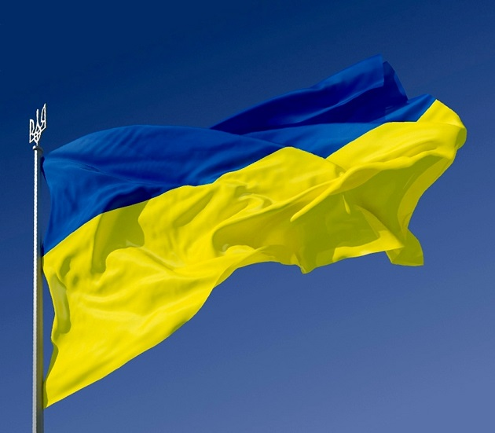
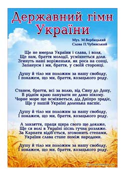
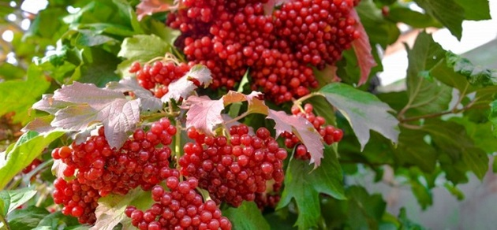
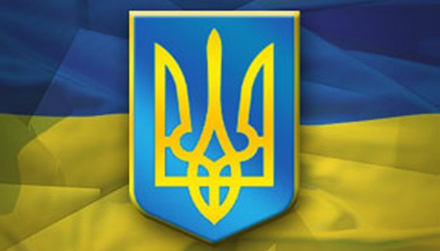

Прапор

Держа́вний пра́пор Украї́ни — стяг із двох рівновеликих горизонтальних смуг синього і жовтого кольорів. Співвідношення ширини прапора до його довжини 2:3.
Жовтий (золотий) і синій кольори використовувалися на гербі Руського королівства XIV століття. Вони також вживалися на гербах руських земель, князів, шляхти і міст середньовіччя і раннього нового часу.
Починаючи з XVI століття козаки Війська Запорозького використовували в невеликій кількості прапори-хоругви синьо-жовтих барв, а вже з 1710-х років синьо-жовті козацькі прапори почали переважати серед козацьких хоругв, такі прапори часто виготовляли з синього полотнища із нашитим на ньому лицарем у золотих чи червлених шатах та золотим орнаментом та арматурою.
Сучасний синьо-жовтий прапор був вперше публічно зафіксований 25 червня 1848 року у Львові, який українці Королівства Галичини та Володимирії вивісили над Львівською ратушею як національний прапор. Саме після цього випадку синьо-жовтий стяг набував все більшої популярності в українців, а після революції 1905 року його почали використовувати і в Наддніпрянській Україні.
У 1917—1921 роках, під час української революції, цей стяг був державним прапором Української Народної Республіки й Української Держави.
У 1938—1939 роках синьо-жовтий стяг був прапором Карпатської України, в 1941 році — Української Держави.
Надалі, за радянських часів синьо-жовтий стяг використовувався підпільно, його використання в СРСР каралося ув'язненням на два роки.
1991 року, після розвалу СРСР, цей прапор де-факто використовувався як державний стяг незалежної України. 18 вересня 1991 року Президія Верховної Ради України юридично закріпила за синьо-жовтим біколором статус офіційного прапора країни. 23 серпня в Україні щорічно відзначають День державного прапора.
Гімн

Держа́вний Гі́мн Украї́ни — один із головних державних символів України поряд із прапором і гербом. Державним гімном є пісня «Ще не вмерла України і Слава, і Воля»: слова Павла Чубинського, музика Михайла Вербицького. Офіційна музична редакція ухвалена Верховною Радою 15 січня 1992 року, текст гімну затверджено Законом України «Про Державний Гімн України» 6 березня 2003 року.Гімн у перекладі з грецької мови означає святкова пісня. Державний Гімн є одним із символів державної символіки і ідентифікує державу на міжнародних зібраннях, форумах, спортивних змаганнях.
Законопроектом пропонувалося затвердити як Державний Гімн Національний Гімн на музику Михайла Вербицького зі словами тільки першого куплета і приспіву пісні Павла Чубинського «Ще не вмерла Україна». У той же час перша строфа гімну, згідно з пропозицією президента, звучатиме «Ще не вмерла України і слава, і воля». Цей закон підтримали 334 народних депутати, проти висловилися 46 з 433, що зареєструвалися для голосування. Не брали участі в голосуванні фракції Соцпартії і Компартії.
З прийняттям цього закону Стаття 20 Конституції України набула завершеного вигляду. Національний Гімн на музику М.Вербицького отримав слова, віднині затверджені законом.
Калина

Калина - дерево українського роду. Колись у сиву давнину вона пов'язувалася з народженням Всесвіту, вогненної трійці: Сонця, Місяця і Зірки. Тому й отримала калина таке ім'я від старослов'янського назви Сонця - Коло. А оскільки ягоди калини червоного кольору, то й стали вони символом крові та безсмертного рода.
Калина - дерево українського роду. Ягоди калини червоні, що символізує безсмертя роду. Дуб і калина - символи краси і сили, але сили незвичайної, краси надзвичайною.
Калина — символ життя, крові, вогню. Деякі дослідники пов'язують її назву із сонцем, жаром, паланням. Калина часто відіграє роль світового древа, на вершечку якого птахи їдять ягоди і приносять людям вісті, іноді з потойбіччя. Та й саме древо пов'язує світ мертвих зі світом живих. Калина символізує материнство: кущ — сама мати; цвіт, ягідки — діти. Це також уособлення дому, батьків, усього рідного. Калина — український символ позачасового єднання народу: живих з тими, що відійшли в потойбіччя і тими, котрі ще чекають на своє народження. Калина уособлює й саму Україну. Як символ Батьківщини, вона «проросла» в гімнові січових стрільців.Найбільш оспіваною породою в Україні є калина. Колись у сиву давнину вона пов'язувалася з народженням Всесвіту, вогненної трійці: Сонця, Місяця і Зірки. Тому і назву свою має від давньої назви Сонця — «Коло».
Іноді калину вважають символом України. Її значна поширеність на теренах України, пов'язаність із родинно-побутовими, календарними обрядами (весілля, похорони, осінній обряд «похід на калину» та ін.) зумовили перехід із світу номінативної одиниці у світ художнього образу. Найбільше цей давній фольклорний образ виступає словом-символом як домінанта в асоціативному зв'язку калина — дівчина (мати), калина — Україна, калина — кров. Домінує загальнопоширена спорідненість «калина — дівчина». Цю стійку асоціацію розглядали видатні фольклористи Микола Костомаров, О. Веселовський, Олександр Потебня.
Герб

Герб Украї́ни — синій щит із золотим тризубом київського князя Володимира Великого. Офіційний герб держави Україна. Один із трьох державних символів нарівні з прапором і гі́мном. Затверджений 19 лютого 1992 року відповідною постановою Верховної Ради України. Має статус малого герба, що також мусить лягти в основу майбутнього великого герба. Згадується у Конституції України 1996 року як знак княжої держави Володимира . Походить від знаків Рюриковичів X—XII століття, з часів Київської Русі. Традиція використання герба-тризуба веде свій початок від герба Української Народної Республіки, від ухвал 12 лютого 1918 Малої ради у Коростені та 22 березня того ж року Української Центральної Ради в Києві. Окрім тризуба історичними гербами українських державних утворень були руський лев, руська погоня, лицар із самопалом Війська Запорозького тощо. Згідно з початковими положеннями Конституції останній символ має бути складовою великого герба.19 лютого 1992 року Верховна Рада України затвердила своєю постановою Державний герб незалежної України. Ним став золотий Тризуб на синьому щиті — національний символ українців часів визвольних змагань XX століття. Проект герба, затверджений Верховною Радою, був розроблений групою українських геральдистів — Андрієм Гречилом, Олексієм Коханом та Іваном Турецьким.
Постанова визначала Тризуб малим гербом України, вважаючи його головним елементом великого герба. Зображення герба мусило розміщуватися на печатках органів державної влади і державного управління, грошових знаках та знаках поштової оплати, службових посвідченнях, штампах, бланках державних установ. Документ також мав додаток, в якому містилися кольорове, чорно-біле та схематичне зображення герба із вказаними пропорціями щита і тризуба.
28 червня 1996 року була прийнята Конституція України, яка у Статті 20 проголошувала Тризуб головним елементом Великого Державного герба України. Тризуб визначався як знак княжої держави Володимира Великого і малий Державний герб України. Згідно з Конституцією великий Державний герб мусив встановлюватися в майбутньому, окремим законом Верховної Ради України, з урахуванням малого герба та герба Війська Запорізького.